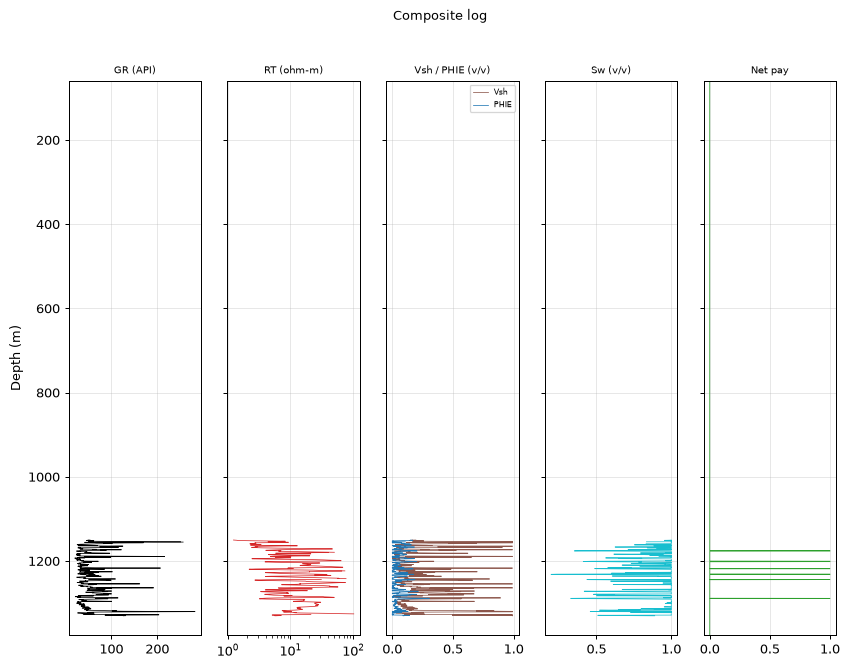
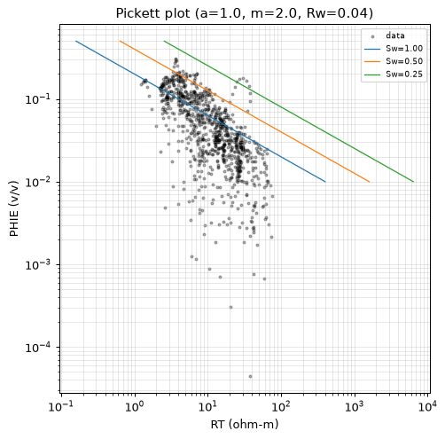
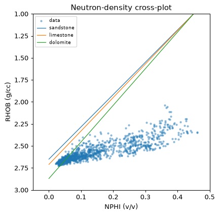
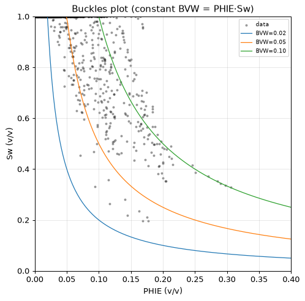
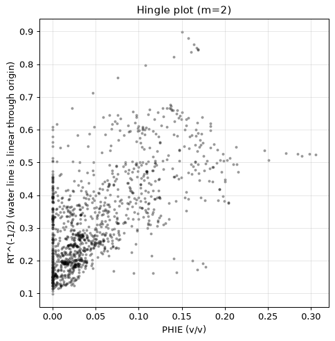
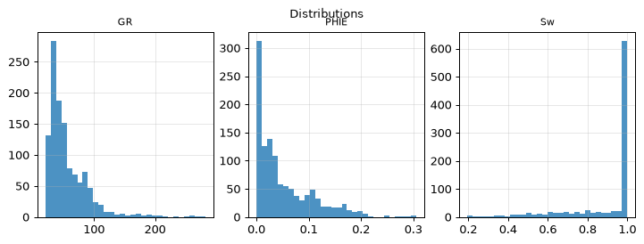
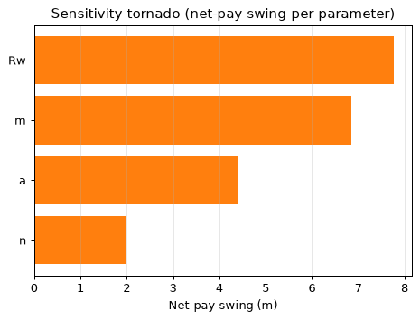
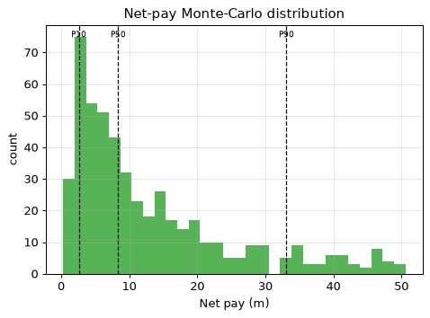

| Well (UWI) | 15-135-25990-00-00 |
| Log date | 2/11/2018 |
| Service company | Pioneer Energy Services |
| Acquisition date (header) | 2/11/2018 |
| PLSS location | Sec 31 T19S R21W (map precision ±1.6 km) |
| Larionov variant | old_rocks (degraded) |
| Convergence status | DID_NOT_CONVERGE |
| Confidence tier | ○ BRACKETED |
| Engine versions | calc_vsh 0.1.0 · calc_phie 0.1.0 · calc_sw 0.1.0 · formula_registry 0.1.0 |
| Config hash (SHA-256) | 2a9cb78728e386ab… |
| Git SHA | df574ffab7ee |
| Generated | autonomously, no human in the per-report loop |
Confidence legend. Each result is tagged by parameter provenance: ● FIRM (core-calibrated) · ◐ QUALIFIED (offset-derived) · ○ BRACKETED (regional/global default — read as a range, dominant uncertainty stated). The system does not claim *always correct*; it states how well-supported each number is.
⚠️ ABSTENTION — this is NOT a confident estimate. The run did not converge to a defensible result; the numbers below are an uncalibrated engineering estimate, reported for transparency only:
- 1 unresolved MECHANICAL objection(s)
This interval must be read as a bracketed estimate, not a firm result. The run DID NOT CONVERGE, and with one unresolved mechanical objection still open in the QC loop, the numbers below are an uncalibrated engineering estimate reported for transparency only. Net pay across the 180.0 m gross section could range from as little as 2.6 m to as much as 33.1 m, with a central figure near 8.4 m — a very thin net-to-gross of only 0.027. Where pay is developed, the rock reads reasonably: effective porosity averages 0.184, water saturation sits near 0.375, and shale volume is modest at about 0.153. But those averages rest on a water-resistivity value (Rw) carried as a regional default rather than a locally calibrated measurement, and that single uncalibrated parameter alone drives roughly 7.8 m of swing in the pay estimate. With no core control to anchor the interpretation, this summary is a range bounded by Rw uncertainty — nothing more. Local Rw calibration is the clear priority before any volumetric decision rests on these numbers.
Net pay P10 / P50 / P90 = 2.6 / 8.4 / 33.1 m.
Net pay is dominated by 'Rw', which is a regional DEFAULT (uncalibrated). This is the single largest uncertainty — the result is bracketed, not a confident point estimate.
| Edit type | Curve | Detail |
|---|---|---|
| unit_conversion | NPHI | factor 0.01 |
| hard_range_mask | PHID_SVC | count 4 |
| hard_range_mask | DRHO | count 4 |
| hard_range_mask | RT | count 151 |
| hard_range_mask | RMED | count 82 |
| range_warn | RHOB | count 4 |
| range_warn | NPHI | count 15 |
| spike_removal | — | 134 edits |
| degradation | — | 2 edits |
Raw mnemonics mapped to canonical curve names:
| Canonical | Raw mnemonic |
|---|---|
| DCAL | DCAL |
| DRHO | RHOC |
| GR | GR |
| NPHI | CNLS |
| NPHI_DOL | CNDL |
| NPHI_SS | CNSS |
| PHID_SVC | DPOR |
| RHOB | RHOB |
| RMED | RILM |
| RT | RILD |
| RXO | RLL3 |
| SP | SP |
Unit conversions: NPHI×0.01.
Edits applied before compute (by type): degradation: 2, hard_range_mask: 4, range_warn: 2, spike_removal: 134, unit_conversion: 1.
All numbers are produced by the deterministic, golden-tested engine. The LLM only selects methods/parameters and writes prose — it never computes a number. Figures are deterministic renderings of these computed numbers for the human reader; the agent reasons over the numeric EDA digest, not images (the models have no vision).
| Step | Method (frozen) | Version |
|---|---|---|
| Vsh | Larionov 1969 (old rocks) | vsh_larionov_old 0.1.0 |
| PHIE | Density-neutron crossplot, shale-corrected | phie_density_neutron 0.1.0 |
| Sw | Archie 1942 | sw_archie 0.1.0 |
| Net pay | Vsh/PHIE/Sw cutoffs → net sand → net reservoir → net pay | netpay 0.1.0 |
| Uncertainty | Monte Carlo P10/P50/P90 + parameter sensitivity | mc 0.1.0 |
Low-resistivity scan: rt_threshold=1.33, n_flagged=836, intervals=[[292.0, 293.7], [300.7, 356.9], [361.6, 366.4], [418.9, 419.4], [435.1, 435.3], [438.0, 439.8], [478.1, 484.6], [495.3, 496.8], [501.9, 503.1], [508.1, 512.5]].
Invasion profile (multi-depth resistivities, 8346 samples): fraction with shallow reading above deep (Rxo/RT > 1.2, invaded/permeable indication): 0.931; reversed (< 0.8): 0.032; median Rxo/RT 2.380; median Rmed/RT 1.073. Raw-curve facts; naming moveable hydrocarbon is the analyst's judgement.
Matrix point-shares (fraction of points near each matrix line): sandstone: 0.099, limestone: 0.186, dolomite: 0.167. Engine crossplot output; naming the dominant lithology is the analyst's judgement. Comparison with core/mud log: not available (LAS-only).
Composite log

Pickett plot

Neutron-density crossplot

Buckles plot

Hingle plot

Distributions

Sensitivity tornado

Net-pay Monte-Carlo distribution

_Uncalibrated screening estimate (no core); Sw used as the Swirr proxy._
_Built on the uncalibrated permeability; indicative only._
Unsupervised k-means on 1155 samples into 4 electrofacies (sample counts: facies 0: 448, facies 1: 210, facies 2: 378, facies 3: 119). Descriptive only — no core labels.
| Parameter | Value | Unit | Provenance | Source |
|---|---|---|---|---|
| gr_min | 20.000 | API | default | — |
| gr_max | 120.000 | API | default | — |
| rho_ma | 2.710 | g/cc | default | Schlumberger 1989 |
| rho_fl | 1.000 | g/cc | default | — |
| phie_max | 0.450 | v/v | default | — |
| phi_sh_d | 0.100 | v/v | default | — |
| phi_sh_n | 0.350 | v/v | default | — |
| a | 1.000 | - | default | Winsauer et al. 1952 |
| m | 2.000 | - | default | Archie, G.E. 1942 |
| n | 2.000 | - | default | Archie, G.E. 1942 |
| Rw | 0.040 | ohm-m | default | Kansas Geological Survey 2000 |
| rt_hydrocarbon_floor | 5.000 | ohm-m | default | — |
| vsh_cutoff | 0.350 | v/v | default | — |
| phie_cutoff | 0.100 | v/v | default | — |
| sw_cutoff | 0.500 | v/v | default | — |
| bit_size_config | 7.875 | in | default | — |
| qc_abort_threshold | 0.800 | - | default | — |
| circuit_breaker_n | 3.000 | - | default | — |
The citations table (not RAG) gives each cited parameter exactly one frozen source. Parameters tagged
defaultare regional/global — they drive the bracketed tier.
Boundary-inclusive criteria applied by the engine (netpay) to flag reservoir:
| Stage | Criterion | Cutoff | Provenance |
|---|---|---|---|
| Net sand | Vsh ≤ cutoff | 0.350 | default |
| Net reservoir | + PHIE ≥ cutoff | 0.100 | default |
| Net pay | + Sw ≤ cutoff | 0.500 | default |
Cutoff values are engine parameters (never LLM-authored); the dominant net-pay uncertainty is Rw — see Uncertainty for the swing.
Curve provenance (canonical ← raw mnemonic): DCAL←DCAL, DRHO←RHOC, GR←GR, NPHI←CNLS, NPHI_DOL←CNDL, NPHI_SS←CNSS, PHID_SVC←DPOR, RHOB←RHOB, RMED←RILM, RT←RILD, RXO←RLL3, SP←SP.
QC edits applied before compute — degradation: 2, hard_range_mask: 4, range_warn: 2, spike_removal: 134, unit_conversion: 1.
| Validator | Type | Detail |
|---|---|---|
| vsh_phie_anticorrelation | support | Vsh-PHIE Pearson 0.95 > 0.3 (dirty rock + high porosity) |
| rt_sw_consistency | mechanical | 6 depths with Sw<0.4 but RT<5.0 ohm-m |
flowchart TD
dec_1["decision: step: depth_quality"]
act_1["tool_call: depth_quality"]
dec_2["decision: step: review_attempts"]
act_2["tool_call: review_attempts"]
dec_3["decision: step: crossplot"]
act_3["tool_call: crossplot"]
dec_4["decision: step: set_zone_of_interest"]
act_4["tool_call: set_zone_of_interest"]
dec_5["decision: step: compare_methods"]
act_5["tool_call: compare_methods"]
dec_6["decision: step: validate_choice"]
act_6["tool_call: validate_choice"]
dec_7["decision: step: derived_parameters"]
act_7["tool_call: derived_parameters"]
dec_8["decision: step: lithology"]
act_8["tool_call: lithology"]
dec_9["decision: step: permeability"]
act_9["tool_call: permeability"]
dec_10["decision: wasted no-op: permeability"]
dec_11["decision: step: rock_quality"]
act_10["tool_call: rock_quality"]
dec_12["decision: step: objection_profile"]
act_11["tool_call: objection_profile"]
dec_13["decision: wasted no-op: lithology"]
dec_14["decision: step: electrofacies"]
act_12["tool_call: electrofacies"]
dec_15["decision: wasted no-op: permeability"]
dec_16["decision: wasted no-op: lithology"]
dec_17["decision: wasted no-op: permeability"]
dec_18["decision: wasted no-op: lithology"]
dec_19["decision: wasted no-op: permeability"]
dec_20["decision: wasted no-op: lithology"]
dec_21["decision: wasted no-op: permeability"]
dec_22["decision: wasted no-op: lithology"]
dec_23["decision: wasted no-op: permeability"]
dec_24["decision: wasted no-op: lithology"]
dec_25["decision: wasted no-op: permeability"]
dec_26["decision: wasted no-op: lithology"]
dec_27["decision: wasted no-op: permeability"]
dec_28["decision: wasted no-op: lithology"]
dec_29["decision: wasted no-op: permeability"]
dec_30["decision: wasted no-op: lithology"]
dec_31["decision: wasted no-op: permeability"]
dec_32["decision: wasted no-op: lithology"]This is a LAS-only study. Data that would calibrate the interpretation is absent:
The interpretation does not converge and is tagged BRACKETED; it should not be used as a confident point estimate. The headline outcome is a wide net-pay range of 2.6 m (P10) to 33.1 m (P90) about a central 8.4 m (P50) over a 180.0 m gross interval, a net-to-gross of only 0.027. The width of that range is governed almost entirely by Rw, which is carried as a regional default and accounts for about 7.8 m of the swing. Within the intervals that meet cutoffs, the rock quality itself is unremarkable but not discouraging — PHIE near 0.184, Sw near 0.375, and Vsh near 0.153 — yet these figures inherit the same uncalibrated Rw and so cannot be read as firm. Two validator objections remain, one of them an unresolved mechanical objection that triggers the abstention on this run. The single, unambiguous next step is local Rw calibration; until that is in hand, no volumetric or completion decision should rest on these numbers, and no core, mud-log, or pressure data were available to independently anchor the result.
{
"net_pay_total_m": 4.876800000000003,
"net_pay_p10_p50_p90": [
2.5908000000000015,
8.382000000000005,
33.11652000000003
],
"driving_params": {
"a": 1.0,
"m": 2.0,
"n": 2.0,
"Rw": 0.04
},
"claim_verifier": {
"result": "PASS",
"flags": [],
"tone_flags": []
}
}| Item | Present |
|---|---|
| QC edits recorded before compute | ✓ |
| Every number ledger-traced | ✓ |
| Confidence tier on the run | ✓ |
| Parameter citations frozen | ✓ |
| Validator objections listed, not hidden | ✓ |
| Uncertainty propagated (Monte Carlo) | ✓ |
| Claim verifier run on prose | ✓ |